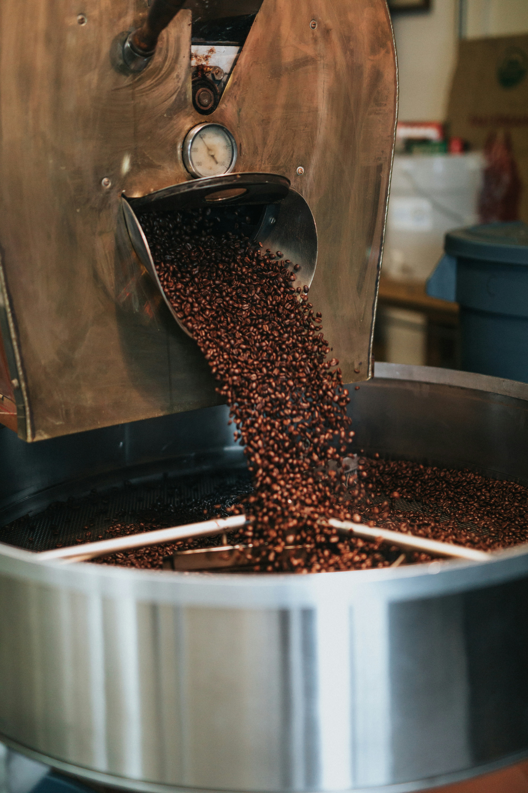
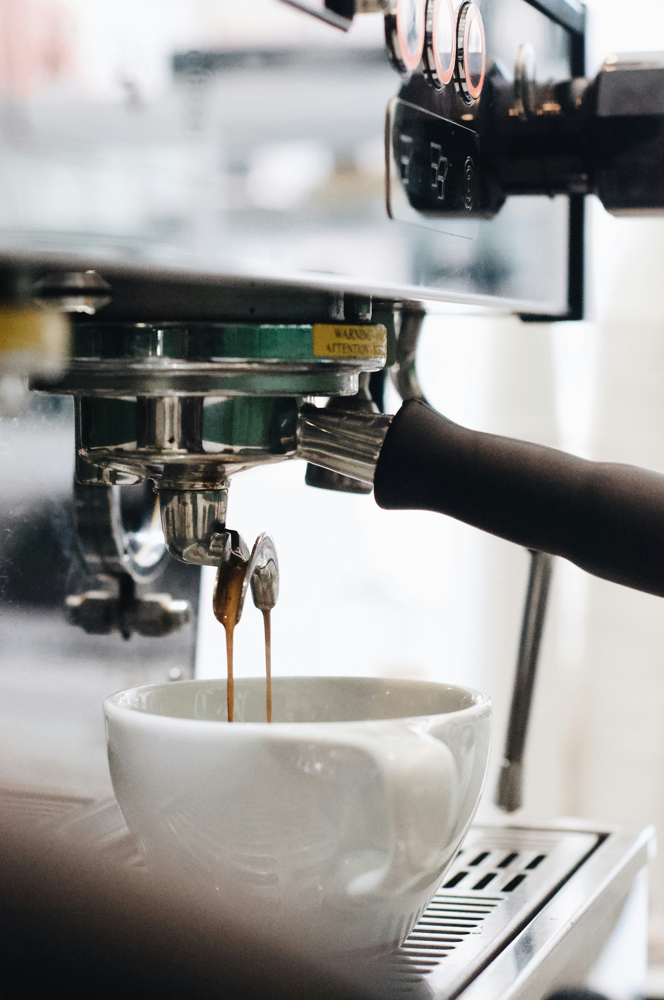

컴포즈커피는 전 세계 주요 산지에서 엄선한 원두만을 사용합니다.
전문 큐그레이더가 직접 산지를 방문해 품질을 검증하고,
최적의 로스팅 포인트를 찾아 일관된 맛을 유지합니다.
단 한 잔도 타협 없이, 처음부터 끝까지 품질을 책임집니다.
전국 어느 매장을 방문해도 동일한 품질을 경험할 수 있도록
표준화된 교육 시스템을 운영합니다.
신규 바리스타는 본사 교육 과정을 필수로 이수하며,
정기적인 현장 점검과 피드백을 통해 서비스 수준을 꾸준히 유지합니다.

컴포즈커피 앱을 통해 미리 주문하고 매장에서 바로 픽업하는
스마트한 경험을 제공합니다.
키오스크와 앱 주문 시스템을 통합 운영해
혼잡 시간대에도 빠르고 정확한 서비스가 가능합니다.
고객의 시간을 아끼는 것도 컴포즈커피의 철학입니다.
컴포즈커피는 가맹점 창업 이후에도 지속적인 성장을 함께합니다.
본사에서 원자재를 직접 공급해 원가를 절감하고,
매출 데이터 분석과 운영 컨설팅을 통해
각 매장이 최적의 성과를 낼 수 있도록 지원합니다.
혼자가 아닌, 함께하는 운영입니다.